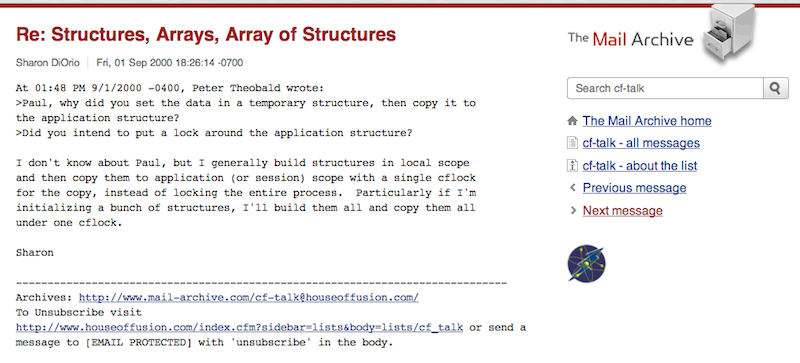
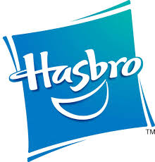
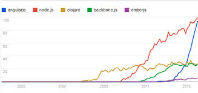
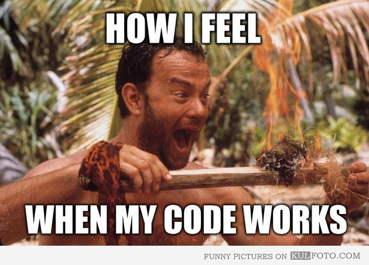

Adding AngularJS to Existing Apps
Getting the UI Sugar...Without the jQuery Pain
NCDevCon, September 2013 Sharon DiOrio • [@sharondio](https://twitter.com/sharondio)My story
ColdFusion was my life
Blatant Brag Slide
Why move to Javascript?
On Javascript
"Every developer loves and hates JavaScript a little bit."~ Jeremy Foster
But...
"Learning JavaScript used to mean you weren't a serious software developer. Today, not learning Javascript means the same thing."~ Tim O'Reilly
Why Angular?
 graphic courtesy of David CorbachoWhy this talk?
Plenty of demos, do we need more?
We do when your code looks something like this*:
UPDATE dbo.tblUsers
SET TotalEvents = TotalEvents - 1
WHERE UserID = #request.thisClientID#
UPDATE dbo.tblQuote
SET ConfirmedDate = NULL
WHERE (dbo.tblQuote.QuoteID = #request.QuoteID#)
#rstSectionDetail.Dest#">
#rstSectionDetail.Dest#" />
The status for the event listed above has changed.
This quote will no longer be visible on the quote status page.
Bad stuff happened
I'd want:
- Quick Results
- Impress your boss
- Impress other geeks
- Resume fodder
- Learn to like JS a little bit and become one of the cool kids
- Fun/Feel like a genius
Ben Nadel's Angular experience

Where are you now with JS?
- Avoids Javascript like the plague
- Enough jQuery to add it to your LinkedIn profile
- A lot of jQuery and JS, but disorganized
- A light framework (backbone.js)
- A full framework (AngularJS, ember.js)
You can't talk about Javascript without talking about jQuery
But let's just be honest...Nobody really liked this
function next(selector) {
var $element = $(selector);
return $element
.children(":eq(0)")
.add($element.next())
.add($element.parents().filter(function() {
return $(this).next().length > 0;
}).next()).first();
}
Geek Trivia
Imperative vs. Declarative
- Imperative is explicitly the DOM what to do and how to do it.
- Declarative is describing what we want, and let the underlying systems figure out how to make it happen.
Look familiar?
#name# #address# ...
Angular is very declarative too.
{{item.name}} {{item.address}}
OK, nice slides...but...
"Talk is cheap. Show me the code."~ Linus Torvalds
Demo 1
Bootstrapping a complete AngularJS Application
<!DOCTYPE html>
<html ng-app>
<head>
<title>Adding AngularJS to Existing Apps - Basic App</title>
<script src="/common/angular/angular.min.js"></script>
</head>
<body>
<h2 id="title">Adding AngularJS to Existing Apps - Basic App</h2>
<div>
Model me: <input ng-model="my_model"><br>
{{my_model}}
</div>
</body>
</html>
Demo 2
With a controller
<!DOCTYPE html>
<html>
<head>
<title>Adding AngularJS to Existing Apps - Demo 1</title>
<!-- style counts -->
<link rel="stylesheet" href="/css/normalize.css">
<link rel="stylesheet" href="/css/main.css">
<!-- core scripts -->
<script src="/common/angular/angular.min.js"></script>
<!-- app scripts -->
<script>
'use strict';
//App module.
var app = angular.module('basic-app-module', []);
//Controller - I control stuff
app.controller('MainCtrl', function($scope) {
$scope.title = "Basic App Module";
});
</script>
</head>
<body ng-app="basic-app-module" ng-controller="MainCtrl">
<h2 id="title">Adding AngularJS to Existing Apps - {{title}}</h2>
<div><input ng-model="title"></div>
</body>
</html>
Demo 3
Nothing ain't nothing without data
<!DOCTYPE html>
<html>
<head>
<title>Adding AngularJS to Existing Apps - Simple With Data</title>
<!-- style counts -->
<link rel="stylesheet" href="/css/normalize.css">
<link rel="stylesheet" href="/css/main.css">
<!-- core scripts -->
<script src="/common/angular/angular.min.js"></script>
<!-- app scripts -->
<script>
'use strict';
//App module.
var app = angular.module('basic-app-with-data', []);
app.controller('MainCtrl', function($scope, $http) {
$scope.title = "Basic App with Data";
// This really belongs in a service, but it's fine in the controller for now.
$http.get('data.cfc?method=getBeers').then(function(results) {
$scope.beers = results.data;
console.log(results);
console.log($scope.beers);
});
});
</script>
</head>
<body ng-app="basic-app-with-data" ng-controller="MainCtrl">
<h2 id="title">Adding AngularJS to Existing Apps - {{title}}</h2>
<div>
<ul>
<li ng-repeat="beer in beers | limitTo: 25">{{beer.NAME}}</li>
</ul>
</div>
</body>
</html>
Demo 4
Put data access in a service
<!DOCTYPE html>
<html>
<head>
<title>Adding AngularJS to Existing Apps - Simple With Data</title>
<!-- style counts -->
<link rel="stylesheet" href="/css/normalize.css">
<link rel="stylesheet" href="/css/main.css">
<!-- core scripts -->
<script src="/common/angular/angular.min.js"></script>
<!-- app scripts -->
<script>
'use strict';
//App module.
var app = angular.module('basic-app-with-data-service', []);
app.controller('MainCtrl', function($scope, $http, BeerSvc) {
$scope.title = "Demo with Data";
BeerSvc.get().then(function(data) {
$scope.beers = data;
});
});
//App service
app.service('BeerSvc', function($http) {
this.get = function() {
return $http.get('data.cfc?method=getBeers').then(function(response) {
return response.data;
});
}
});
</script>
</head>
<body ng-app="basic-app-with-data-service" ng-controller="MainCtrl">
<h2 id="title">Adding AngularJS to Existing Apps - {{title}}</h2>
<div>
<ul>
<li ng-repeat="beer in beers | limitTo: 25">{{beer.NAME}}</li>
</ul>
</div>
</body>
</html>
One more with a bigger service
<!DOCTYPE html>
<html>
<head>
<title>Adding AngularJS to Existing Apps - Simple With Data</title>
<!-- style counts -->
<link rel="stylesheet" href="/css/normalize.css">
<link rel="stylesheet" href="/css/main.css">
<!-- core scripts -->
<script src="/common/angular/angular.min.js"></script>
<!-- app scripts -->
<script>
'use strict';
//App module.
var app = angular.module('basic-app-with-data-service', []);
app.controller('MainCtrl', function($scope, $http, BeerSvc) {
$scope.title = "Demo with Data";
BeerSvc.get().then(function(data) {
$scope.beers = data;
});
BeerSvc.count().then(function(data) {
$scope.beerCount = data;
});
});
//App service
app.service('BeerSvc', function($http) {
this.get = function() {
return $http.get('data.cfc?method=getBeers').then(function(response) {
return response.data;
});
}
this.count = function() {
return $http.get('data.cfc?method=getBeerCount').then(function(response) {
return response.data;
});
}
});
</script>
</head>
<body ng-app="basic-app-with-data-service" ng-controller="MainCtrl">
<h2 id="title">Adding AngularJS to Existing Apps - {{title}}</h2>
<h4>{{beerCount}} beers total.
<div>
<ul>
<li ng-repeat="beer in beers | limitTo: 25">{{beer.NAME}}</li>
</ul>
</div>
</body>
</html>
But what about a real app?
(My confession, I've never actually added AngularJS to an existing app until now.)"Real" Demo
Clicky-ClickyIt's great when it works!
Now, a story
Stop me if you've heard this one beforeRolling Demo
Clicky-Clicky
var app = angular.module('NCDevConTalk', []);
app.controller('TalkCtrl', function($scope) {
$scope.status = 'done';
});
------
Slides: [Github Repo](https://github.com/Sharondio/tree/master/2013/adding-angular-to-existing-apps) sharondio @ [twitter](http://twitter.com/sharondio) & [Google+](https://plus.google.com/u/0/115487514031744604257/posts)
------ Resources: * [Docs] (http://angularjs.org) AngularJS * [Tutorial] (http://docs.angularjs.org/tutorial) AngularJS Tutorial * [Videos] (http://egghead.io) Egghead Videos * [Videos] (http://www.youtube.com/user/angularjs) Angular Youtube Channel * [Blog] (http://www.yearofmoo.com/) Year of Moo Blog